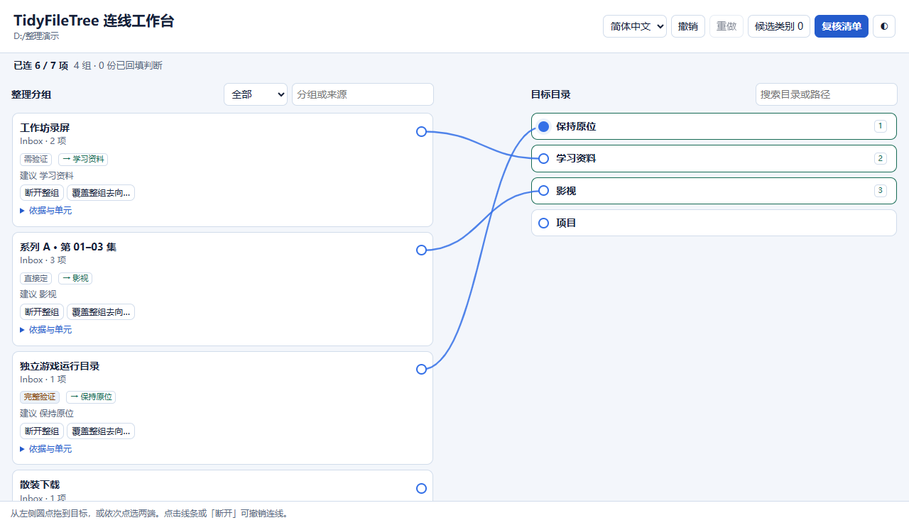

安装主命令
从 GitHub 克隆项目，然后在项目目录安装。
终端
git clone https://github.com/yeye45/tidy-file-tree.git
cd tidy-file-tree
python -m pip install .
扫描目录结构和编号线索。AI 代理可以据此核对剧集顺序，或判断程序和运行资源是否应该一起保留。
在浏览器里查看分组和依据。把整组或单个文件连到目标文件夹，也可以选「保持原位」。
下载动作表，先核对源和目标，再用同一份预演清单执行。整理日志可供撤销和中断恢复。
准备 Python 3.9 或更高版本。工作台可以用虚构样本试用。
从 GitHub 克隆项目，然后在项目目录安装。
git clone https://github.com/yeye45/tidy-file-tree.git
cd tidy-file-tree
python -m pip install .在项目目录运行以下命令，练习连线并查看复核清单。
$demoName = "tidy-file-tree-demo-" + [guid]::NewGuid()
$demo = New-Item -ItemType Directory -Path $demoName
python tests/make_fixture.py $demo.FullName
tidy-file-tree ui (Join-Path $demo.FullName "root") --open